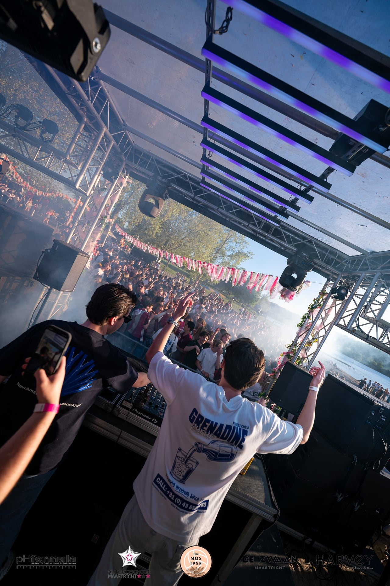
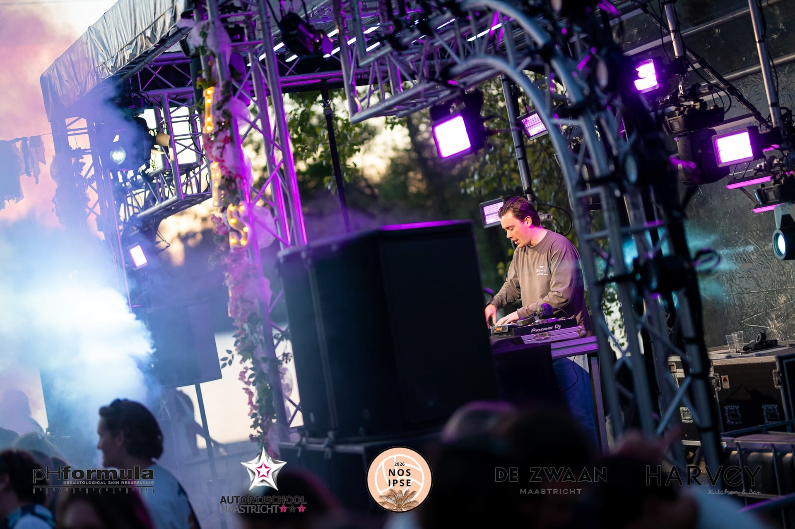

PA systemen
L-Acoustics en andere professionele systemen voor dekking, druk en controle.
Festivals & Events
Van één podium tot een evenement met meerdere locaties: Decibel kan de volledige technische productie verzorgen. We combineren professionele apparatuur met ervaren projectleiding en technici. Daarbij kijken we niet alleen naar wat technisch mogelijk is, maar ook naar planning, budget, veiligheid en de praktische uitvoering op locatie.
Planning en uitvoering
Een goede productie begint ruim vóór de eerste bezoeker binnenkomt. Samen met de organisatie brengen we het programma, de locatie, de beschikbare tijden, de riders en alle technische wensen in kaart. Op basis daarvan maken we een praktisch plan voor geluid, licht, podium, stroomvoorziening, crew, opbouw, soundchecks, changeovers en afbouw.
Tijdens de voorbereiding heb je één vast aanspreekpunt dat rechtstreeks afstemt met de locatie, artiesten en andere leveranciers. Op locatie houden onze projectleiding en technici het overzicht. Als het programma wijzigt of er snel geschakeld moet worden, zijn de lijnen kort en weet iedereen wat er moet gebeuren. Zo kan de productie volgens planning worden opgebouwd en begint iedere show onder de juiste technische omstandigheden.


Disciplines
L-Acoustics en andere professionele systemen voor dekking, druk en controle.
Moving heads, blinders, strobes, frontlicht, outdoor verlichting en bediening.
Verdeelkasten, bekabeling, data, truss, podia en praktische terreinoplossingen.
Haze, rook, sparkulars en effecten passend bij locatie en vergunningen.
Veelgestelde vragen
Ja. Afhankelijk van de locatie en het programma stellen we één technisch pakket samen met geluid, licht, DJ-apparatuur, podium, truss, stroomverdeling en de benodigde technici. We kunnen ook het transport, de op- en afbouw en de bediening tijdens het evenement verzorgen.
Ja. We kunnen volledig leveren of inprikken op bestaande faciliteiten, afhankelijk van locatie en rider.
Ja. We denken mee over systeemkeuze, opstelling, richtwerking, meetpunten en praktische afstemming met de organisatie.
Neem vrijblijvend contact op, dan bespreken we samen uw ideeën.